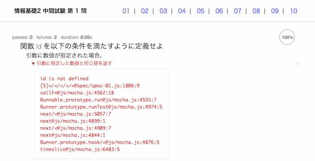
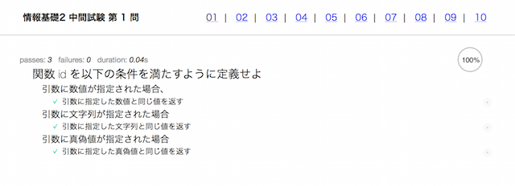

解き方
- それぞれの問題をブラウザで表示します。次の図のように真っ赤な画面が表示されます

- js フォルダ内の、問題番号と同じ名前のファイルを Atom で開きます
- 問題01 なら js/01.js を開きます
- 問題07 なら js/07.js を開きます
- 問題の条件を満たすように関数を実装します
- 実装後、問題画面を再読み込みします
- 満たされた条件の横にはチェックマークがつきます

- 全てにチェックマークがついたら、その問題は終了です。次の問題へ進みましょう
- GitHubにファイルを sync して提出します